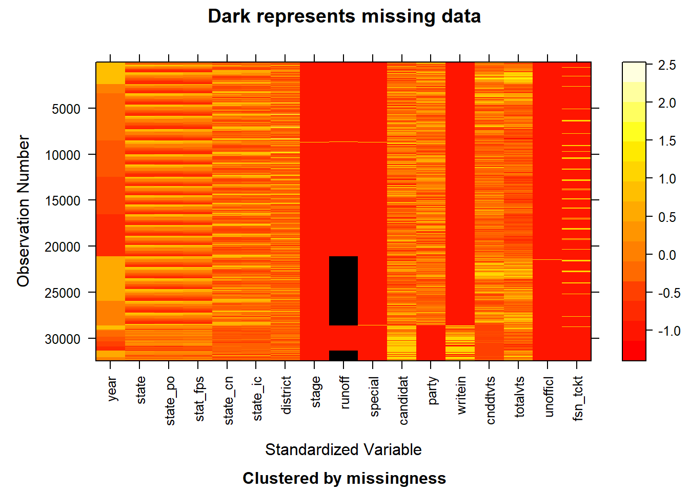

Our project draws on several datasets hosted by the MIT Election Lab. Primary Source: https://electionlab.mit.edu/data
Data Sources:
Presidential Election Results (1976-2020) Source: https://dataverse.harvard.edu/dataset.xhtml?persistentId=doi:10.7910/DVN/42MVDX Description: This dataset contains state-level presidential election results, including vote counts for major parties, minor parties, and independent candidates. It provides data on total votes cast, voter turnout, and percentage share of each candidate in every presidential election from 1976 to 2020. Data Format: CSV file with columns for state, year, candidate, party, vote count, percentage share, and total votes cast. Frequency of Updates: Static dataset last updated to include results through 2020. Dimensions: Rows represent individual state-election combinations, with thousands of records. Planned Import: Data will be imported into R Studio using the read.csv function.
Senate Election Results (1976-2020) Source: https://dataverse.harvard.edu/dataset.xhtml?persistentId=doi:10.7910/DVN/PEJ5QU Description: This dataset provides results for Senate elections, including candidate vote counts, party affiliations, and special elections. Data covers statewide elections and includes party-specific turnout information. Data Format: CSV file with columns for state, year, candidate, party, votes, percentage share, and whether the election was a regular or special election. Frequency of Updates: Static dataset last updated to include results through 2020. Dimensions: State-year combinations with additional rows for runoff elections. Planned Import: Data will be imported into R Studio using the read.csv function.
House Election Results (1976-2022) Source: https://dataverse.harvard.edu/dataset.xhtml?persistentId=doi:10.7910/DVN/IG0UN2 Description: This dataset includes congressional district-level results for House elections, with details on candidates, vote counts, and party affiliations. Data Format: CSV file with columns for district, state, year, candidate, party, vote count, and total votes. Frequency of Updates: Static dataset last updated to include results through 2022. Dimensions: Rows represent congressional district-year combinations, totaling tens of thousands of records. Planned Import: Data will be imported into R Studio using the read.csv function.
Issues/Problems:
Temporal Mismatch: The House election data extends through 2022, while presidential and Senate data only go up to 2020. To ensure consistency, we will analyze all datasets only up to 2020. Runoff Election Data: Significant missing data exists for runoff elections, particularly in Senate and House results. This component will be excluded from the analysis to maintain data reliability. Granularity: While presidential data is state-level, House data is district-level. This mismatch in granularity may limit the scope of comparative analyses. Aggregation or normalization may be necessary in some cases. Data Quality: There are missing or incomplete fields in some years for minor-party candidates and inconsistencies in party naming conventions across datasets.
Installing package into 'C:/Users/jingm/AppData/Local/R/win-library/4.4'
(as 'lib' is unspecified)
package 'naniar' successfully unpacked and MD5 sums checked
The downloaded binary packages are in
C:\Users\jingm\AppData\Local\Temp\RtmpUZzh4o\downloaded_packages
Installing package into 'C:/Users/jingm/AppData/Local/R/win-library/4.4'
(as 'lib' is unspecified)
package 'naniar' successfully unpacked and MD5 sums checked
The downloaded binary packages are in
C:\Users\jingm\AppData\Local\Temp\RtmpUZzh4o\downloaded_packages
Code
install.packages("dplyr")
Installing package into 'C:/Users/jingm/AppData/Local/R/win-library/4.4'
(as 'lib' is unspecified)
package 'dplyr' successfully unpacked and MD5 sums checked
Warning: cannot remove prior installation of package 'dplyr'
Warning in file.copy(savedcopy, lib, recursive = TRUE): problem copying
C:\Users\jingm\AppData\Local\R\win-library\4.4\00LOCK\dplyr\libs\x64\dplyr.dll
to C:\Users\jingm\AppData\Local\R\win-library\4.4\dplyr\libs\x64\dplyr.dll:
Permission denied
Warning: restored 'dplyr'
The downloaded binary packages are in
C:\Users\jingm\AppData\Local\Temp\RtmpUZzh4o\downloaded_packages
Code
install.packages("DataExplorer")
Installing package into 'C:/Users/jingm/AppData/Local/R/win-library/4.4'
(as 'lib' is unspecified)
package 'DataExplorer' successfully unpacked and MD5 sums checked
The downloaded binary packages are in
C:\Users\jingm\AppData\Local\Temp\RtmpUZzh4o\downloaded_packages
Code
library(naniar)
Warning: package 'naniar' was built under R version 4.4.2
Code
library(ggplot2)library(dplyr)
Warning: package 'dplyr' was built under R version 4.4.2
Attaching package: 'dplyr'
The following objects are masked from 'package:stats':
filter, lag
The following objects are masked from 'package:base':
intersect, setdiff, setequal, union
Code
library(DataExplorer)
Warning: package 'DataExplorer' was built under R version 4.4.2
Code
president <-read.csv('1976-2020-president.csv')house <-read.csv('1976-2022-house.csv')senate <-read.csv('1976-2020-senate.csv')
year state state_po state_fips
0 0 0 0
state_cen state_ic office candidate
0 0 0 0
party_detailed writein candidatevotes totalvotes
0 3 0 0
version notes party_simplified
0 4287 0
Code
president_p <-plot_missing(president) +labs(title ="Missing Values in President Dataset",x ="Variables",y ="Observations")president_cleaned <- president[, !(colnames(president) %in%c("notes"))]president_cleaned_p <-plot_missing(president_cleaned) +labs(title ="Missing Values in President Dataset After Cleaning",x ="Variables",y ="Observations")
Code
president_p

Code
president_cleaned_p
The summary of data information and the visualization of missing values in the presidential election dataset reveals that most variables are complete, with no missing values, such as year, state, and totalvotes. However, the notes variable is entirely missing (100%), which likely indicates that there were no special remarks or annotations needed for the observations. Given its lack of content and relevance, we have decided to remove this column from the dataset to streamline the analysis. Additionally, the writein variable shows a very small proportion of missing values (less than 0.1%), which are unlikely to significantly impact the dataset’s overall integrity. Since the writein column has only three missing values, which might be due to oversight during data collection or data loss, we have decided to remove the rows containing these missing values to maintain the integrity of the analysis.
year state state_po state_fips state_cen
0 0 0 0 0
state_ic office district stage runoff
0 0 0 0 8656
special candidate party writein mode
0 0 0 0 0
candidatevotes totalvotes unofficial version fusion_ticket
0 0 0 0 0
Code
house_p <-plot_missing(house) +labs(title ="Missing Values in House Dataset",x ="Variables",y ="Observations")runoff_missing <- house[is.na(house$runoff), ]runoff_missing_by_year <- runoff_missing |>count(year)missing <-ggplot(runoff_missing_by_year, aes(x =factor(year), y = n)) +geom_bar(stat ="identity", fill ="lightblue") +labs(title ="Distribution of Runoff Missing Values by Year",x ="Year",y ="Number of Missing Values") +theme_minimal() +theme(axis.text.x =element_text(angle =45, hjust =1))house_cleaned <- house[, !(colnames(house) %in%c("runoff"))]house_cleaned_p <-plot_missing(house_cleaned) +labs(title ="Missing Values in House Dataset After Cleaning",x ="Variables",y ="Observations")
Code
house_p
Code
missing
Code
house_cleaned_p
The summary of data information and the visualization shows that the missing values in the runoff column are distributed relatively evenly across the years, suggesting that the missing data may be due to inconsistencies or issues in the data collection process. Given the high percentage of missing values in this column (28%) and its relatively low importance for our analysis, we have decided to remove the runoff column entirely to streamline the dataset and focus on more relevant variables.